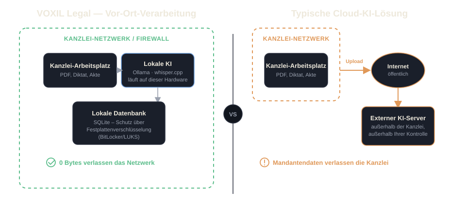
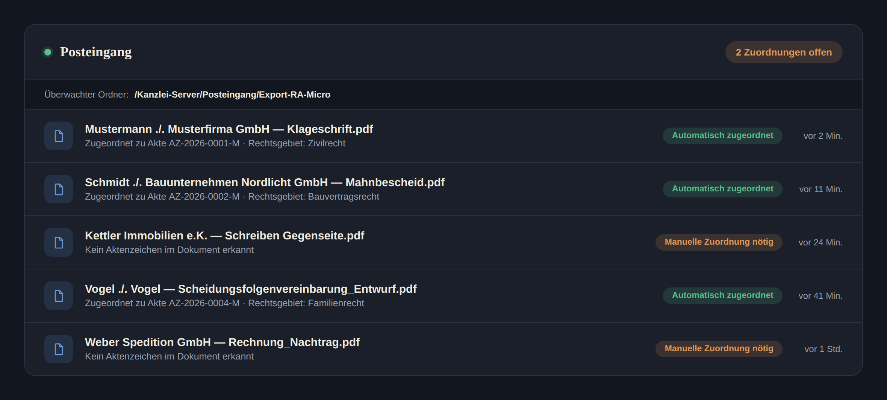

- Lokales Diktat & Transkription (whisper.cpp)
- PDF-Viewer mit Volltextsuche & Aktenverwaltung
- Fakten-Extraktion je Einzeldokument
Passend für Einzelplätze und kleinere Kanzleien mit überschaubarem Aktenaufkommen.
Für Systemhäuser & IT-Partner
Partnerprogramm für IT-Systemhäuser
VOXIL Legal ist eine 100% On-Premise-KI-Lösung für Anwälte, Notare und Insolvenzverwalter – ohne Cloud, ohne externe APIs. Für Sie als Systemhaus bedeutet das: eine jährlich wiederkehrende Lizenz, die Sie Ihren Kanzlei-Kunden anbieten, dazu passendes Hardware-Upselling – und die volle Kundenbeziehung bleibt bei Ihnen.
VOXIL Legal führt Ollama und whisper.cpp direkt auf dem Rechner der Kanzlei aus – bewusst ohne Cloud-Anbindung, damit kein Mandantendokument je das Kanzleinetzwerk verlässt. Das hat einen direkten Effekt auf die Hardware-Anforderungen: veraltete Kanzlei-Office-PCs, die für Textverarbeitung und E-Mail ausgelegt waren, reichen für lokale Sprachmodelle in aller Regel nicht mehr aus.
Für Sie als Systemhaus ist das der natürliche Aufhänger für ein Gespräch, das Sie ohnehin führen sollten: den überfälligen Hardware-Austausch. Statt eines reinen Software-Verkaufs entsteht ein kombiniertes Geschäft aus Lizenz und Hardware – mit einem technischen Grund, der beim Mandanten sofort einleuchtet.
Die Einstufung richtet sich nach dem verfügbaren Arbeitsspeicher der Kanzlei-Hardware – nicht nach Preis. Jede Klasse schaltet zusätzliche KI-Funktionstiefe frei.
Passend für Einzelplätze und kleinere Kanzleien mit überschaubarem Aktenaufkommen.
Für Kanzleien mit mehreren Arbeitsplätzen und laufendem Dokumenteneingang.
Für Kanzleien mit hohem Aktenvolumen und dem Anspruch an maximale Analysetiefe.
VOXIL tritt bewusst nicht als Anbieter gegenüber der Kanzlei auf – wir liefern die Lizenz, Sie liefern den Service.
Sie sind und bleiben der alleinige Ansprechpartner Ihrer Kanzlei-Kunden – vom Erstgespräch über die Wartung bis zur jährlichen Verlängerung.
Installation, Betrieb, Hardware-Wartung und First-Level-Support laufen vollständig über Ihr Systemhaus – VOXIL hat keinen direkten Kontakt zur Kanzlei.
Unser Part beschränkt sich auf die Bereitstellung der .voxlic-Lizenzdatei und der Software selbst – kein Direktvertrieb, kein Parallelkanal an Ihre Kunden vorbei.
VOXIL Legal lässt sich als weiterer Baustein in Ihren bestehenden Managed-Service-Vertrag mit der Kanzlei aufnehmen, statt eine eigene Vertragsbeziehung zu erzeugen.
Systemhäuser beziehen .voxlic-Lizenzen zu Partner-Konditionen und kalkulieren gegenüber der Kanzlei vollständig frei.
Sie beziehen jede .voxlic-Lizenz zu eigenen Partner-Konditionen – unabhängig davon, wie Sie diese Ihrem Kanzlei-Kunden anschließend in Rechnung stellen.
Ob als Teil eines Pauschalvertrags, als separate Position oder gebündelt mit der Hardware – die Endkunden-Kalkulation liegt vollständig bei Ihnen.
Argumente, die Sie gegenüber jeder Kanzlei ohne Nachfrage belegen können – und die Ihr eigenes Haftungsrisiko als Systemhaus reduzieren.
Keine Cloud-Verarbeitung mandatsbezogener Daten – Verschwiegenheitspflicht bleibt gewahrt.
Keine Auftragsverarbeitung durch Dritte, kein zusätzlicher AV-Vertrag mit einem Cloud-Anbieter nötig.
Ollama, whisper.cpp und die Datenbank laufen ausschließlich lokal auf der Kanzlei-Hardware.
Kein Cloud-Haftungsrisiko für Sie als Systemhaus – es gibt schlicht keine Cloud-Anbindung.
Der strukturelle Unterschied zu jeder Cloud-KI-Lösung lässt sich in einem Bild zusammenfassen.

VOXIL Plumbing überwacht einen von der Kanzlei gewählten lokalen Ordner (z. B. den Export-/Posteingangsordner von RA-Micro, DATEV oder NoRA) und ordnet neue Dokumente automatisch der passenden Akte zu.

Mockup mit frei erfundenen Platzhalterdaten – keine echten Mandanten oder Aktenzeichen.
Laden Sie das Partner-Factsheet herunter oder nehmen Sie direkt Kontakt zu uns auf.